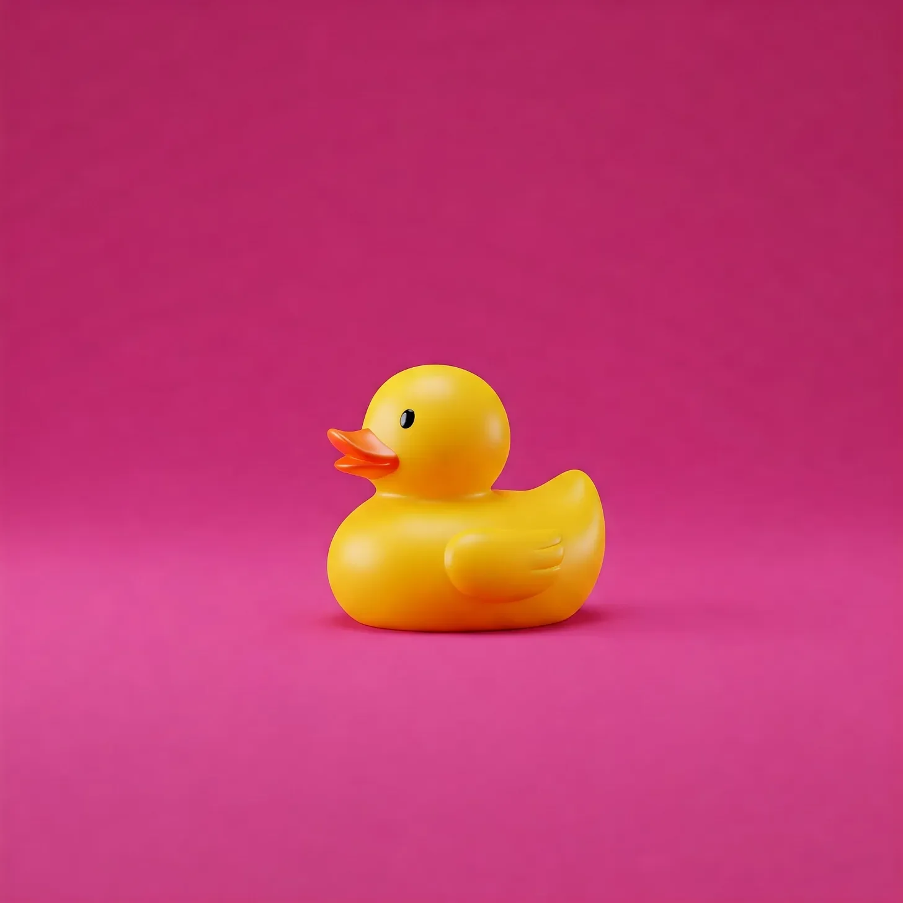

이메일 제목이 ‘의무적 기쁨 프로젝트 (참석 필수)'라고 적혀있는 것을 보는 순간, 우리 모두가 끝장났다는 걸 알았다.
[The email subject line read 'MANDATORY JOY INITIATIVE (ATTENDANCE REQUIRED)’ and that’s when I knew we were all doomed.]
휴게실은 갇힌 동물들처럼 불안한 에너지로 가득했다. 회계팀의 마크는 구명조끼라도 되는 양 커피잔을 꽉 쥐고 있었고, 법무팀의 사라는 아침 회의에서 남은 맛없는 도넛을 이미 세 개나 스트레스 해소용으로 먹어치웠다.
[The break room buzzed with the nervous energy of trapped animals. Mark from Accounting clutched his coffee mug like a life preserver, while Sarah from Legal had already stress-eaten three of the stale donuts left over from morning meetings.]
“우리보고 '기쁨을 주는 물건들'을 가져오래,” 내가 폰을 보며 큰 소리로 읽었다. 마리 콘도를 연상시키는 이 말에 이가 갈렸다. “이게 무슨 디스토피아 같은 악몽이야?”
[“They want us to bring 'items that spark joy,’” I read aloud from my phone, the Marie Kondo reference making my molars grind. “What kind of dystopian nightmare are we living in?”]
“난 퇴직금 받는 꿈을 가져올 거야,” 마크가 네 번째 커피잔에 대고 중얼거렸다. 그의 눈이 모스 부호로 깜빡거렸다: S-O-S.
[“I’m bringing my severance package dreams,” Mark muttered into his fourth cup of coffee. His eye twitched in morse code: S-O-S.]
HR팀의 제니퍼 - 아니 그녀의 새로운 직함인 “기쁨 전도사"가 - 기업 닌자처럼 소리도 없이 우리 옆에 나타났다. 그녀의 미소는 우리 회사의 연간 적자폭보다도 더 컸다.
[Jennifer from HR - or "Joy Ambassador” as her new title suggested - materialized beside us with the stealth of a corporate ninja. Her smile stretched wider than our annual budget deficit. “Who’s ready for some organized happiness?”]
실내 온도가 10도는 떨어진 것 같았다. 어디선가 스테이플러가 바닥에 떨어지는 소리가 들렸다.
[The room temperature dropped ten degrees. A stapler clattered to the floor somewhere in the distance.]
“오늘 하루 종일 할 활동들을 준비해왔어요!” 그녀가 동기부여 스티커로 반짝반짝 장식된 핫핑크색 클립보드를 휘둘렀다. “먼저 '감정 발표회'로 시작해서 분기별 목표를 표현하는 창작 댄스로 마무리할 거예요!”
[“I’ve prepared a full day of activities!” She brandished a hot-pink clipboard bedazzled with motivational stickers. “We start with 'Emotional Show and Tell’ and end with interpretive dance expressing our quarterly goals!”]
마크가 자기 커피잔을 보며 “제발 죽여줘"라고 말하는 것이 보였다.
[I caught Mark mouthing "kill me now” to his coffee cup.]
다음 날 아침, 나는 내가 선택한 무기를 들고 왔다: 작은 비즈니스 넥타이를 맨 고무 오리. 나는 그의 이름을 '꽥스 회장님'이라고 지었다.
[The next morning, I arrived armed with my weapon of choice: a rubber duck wearing a tiny business tie. I’d named him Chairman Quacks.]
“그건 별로 전문적이지 않네요,” 제니퍼가 내 오리를 보며 찡그렸다.
[“That’s not very professional,” Jennifer frowned at my duck.]
“아니요, 굉장히 전문적이에요,” 나는 엄숙하게 오리를 들어올렸다. “넥타이 보이시죠? 아주 기업스럽고, 매우 시너지스틱하잖아요.”
[“Oh, but it is,” I held him up solemnly. “See his tie? Very corporate. Very synergistic.”]
회의실은 제니퍼가 말하는 “기쁨의 경기장"으로 변신해 있었다. 동기부여 포스터들이 사방을 뒤덮고 있었고, 그 위에 그려진 진부한 산 풍경과 날아오르는 독수리들이 인내와 팀워크에 대한 진부한 격언들을 무언으로 외치고 있었다.
[The conference room had been transformed into what Jennifer called a "Joy Arena.” Motivational posters covered every surface, their generic mountain landscapes and soaring eagles screaming silent platitudes about persistence and teamwork.]
“자, 감정 발표회를 시작해볼까요!” 제니퍼가 짹짹거렸다. “누가 먼저 하고 싶으신가요?”
[“Let’s begin with our Emotional Show and Tell!” Jennifer chirped. “Who wants to go first?”]
납덩이 같은 침묵이 내려앉았다. 사무실의 화분들조차 뒤로 물러나는 것 같았다.
[Silence fell like a lead blanket. Even the office plants seemed to lean away.]
“제가 희생자로 자원하겠습니다,” 내가 꽥스 회장님을 높이 들어올리며 일어섰다. “이 오리는 우리 회사가 떠들어대는 워라밸 개선 약속을 상징합니다.”
[“I volunteer as tribute,” I stood, holding Chairman Quacks aloft. “This duck represents our company’s floating promises of better work-life balance.”]
뒤쪽에서 누군가 콧방귀를 뀌었다. 제니퍼의 미소가 불안정한 와이파이처럼 깜빡거렸다.
[A snort escaped from the back of the room. Jennifer’s smile flickered like bad WiFi.]
“좀 더… 긍정적인 걸로 해볼까요?” 그녀가 제안했다.
[“Perhaps something more… positive?” she suggested.]
“아, 하지만 보세요, 이렇게 떠다니는 모습이! 마치 우리의 마감일처럼요.” 내가 오리를 테이블 위에서 춤추게 했다. “그리고 이 넥타이는 역경 속에서도 보여주는 헌신을 의미하죠.”
[“Oh, but look how he floats! Just like our deadlines.” I made the duck dance across the table. “And his tie shows commitment, even in the face of adversity.”]
웃음소리가 방 안에 잔잔히 퍼져나갔다. 심지어 IT팀의 데이브도 노트북 화면 뒤에서 고개를 들었는데, 그의 평소 찌푸린 얼굴이 위험할 정도로 즐거워 보이는 표정으로 바뀌어 있었다.
[More laughter rippled through the room. Even Dave from IT emerged from behind his laptop screen, his usual scowl cracking into something dangerously close to amusement.]
하루가 지나면서 이상한 일이 벌어졌다. 꽥스 회장님은 우리의 악의적 순응의 마스코트가 되었다. 그는 작은 액세서리들을 바꿔가며 “시너지"에 대한 파워포인트 발표에도 등장했다. 사라는 모의 회의 중에 그를 잠들게 해서 "적극적 경청 기술"을 시연하기도 했다.
[As the day progressed, something strange happened. Chairman Quacks became our mascot of malicious compliance. He appeared in PowerPoint presentations about "synergy,” wearing different tiny accessories. Sarah used him to demonstrate “active listening skills” by having him fall asleep during mock meetings.]
오후가 되자 제니퍼마저 무너졌다. 그녀는 꽥스 회장님을 꽉 쥐어 소리를 내게 하면서 “올바른 스트레스 해소 기법"을 시연하고 있었다.
[By afternoon, even Jennifer had cracked. She was using Chairman Quacks to demonstrate "proper stress-relief techniques” which mostly involved squeezing him until he squeaked.]
“있잖아,” 의무적인 신뢰 낙하 운동을 하는 동안 마크가 속삭였다. “이거 실은 좀 재미있다.”
[“You know,” Mark whispered during our mandatory trust-fall exercises, “this is actually kind of fun.”]
“그건 스톡홀름 신드롬이야,” 내가 대답했지만, 나도 미소 짓고 있었다.
[“That’s Stockholm syndrome talking,” I replied, but I was smiling too.]
짐을 싸는 동안 제니퍼가 꽥스 회장님을 들고 다가왔다. “이건 내가 계획했던 것과는 좀 달랐네요,” 그녀가 작은 넥타이를 바로 잡으며 인정했다.
[As we packed up, Jennifer approached me, Chairman Quacks in hand. “This wasn’t quite what I had planned,” she admitted, straightening his tiny tie.]
“때로는 계획하지 않은 기쁨이 최고예요,” 내가 말했다. “컴퓨터 블루스크린이 그냥 화면보호기였다는 걸 알았을 때처럼요.”
[“Sometimes the best joy is unplanned,” I offered. “Like finding out your computer’s blue screen of death was just a screensaver.”]
그녀가 웃었다 - HR에서 승인받은 웃음이 아닌 진짜 웃음이었다. “다음 달 테마는 '마인드풀니스 마라톤 먼데이'예요.”
[She laughed - a real laugh, not her HR-approved one. “Next month’s theme is 'Mindfulness Marathon Monday.’”]
“꽥스 회장님은 준비되어 있을 거예요,” 내가 오리를 돌려받으며 약속했다. “그는 아주 마음이 깊어요. 저 멍한 눈빛 좀 보세요.”
[“Chairman Quacks will be ready,” I promised, retrieving my duck. “He’s very mindful. Look at that thousand-yard stare.”]
차로 걸어가는 동안, 그 어떤 강제적인 팀 빌딩 활동에서도 나오지 않았던 진정한 웃음소리가 사무실에서 들려오는 것 같았다.
[Walking to my car, I could have sworn I heard more genuine laughter from the office than any forced team-building exercise had ever produced.]
꽥스 회장님은 집에 가는 내내 대시보드 위에 앉아있었는데, 그의 플라스틱 부리가 의심스럽게도 히죽거리는 것처럼 보였다.
[Chairman Quacks sat on my dashboard all the way home, his plastic beak curved in what looked suspiciously like a smirk.]